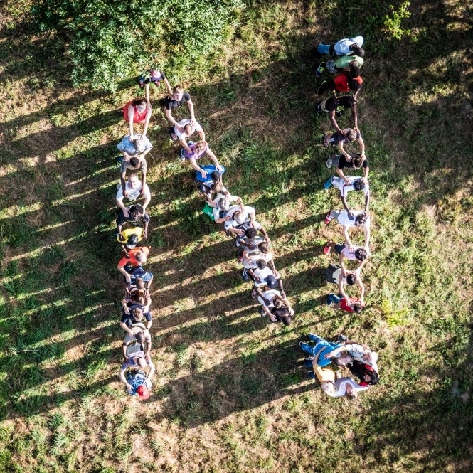

Der Freundeskreis - verschieden und doch vereint

Der Freundeskreis, das sind Ehrenamtliche, Menschen in Sportvereinen, Unternehmer und Kirchenvertreter. Menschen unterschiedlichen Alters und Geschlechts, aus unterschiedlichen Ländern mit verschiedenen Kulturen, Sprachen und mit unterschiedlichem Glauben. Sie vereint die gemeinsame Vorstellung einer besseren Integration von geflüchteten Menschen in unsere Gesellschaft.
Bereits seit 2009 engagiert sich das Netzwerk Flüchtlinge Winnenden mit einer kleinen, aber beständigen Anzahl an Ehrenamtlichen für geflüchtete Menschen. Als sich im Oktober 2014 der Freundeskreis Flüchtlinge in Leutenbach gründet, verbinden sich das Netzwerk und der Freundeskreis. Vereint setzen sie sich heute für ein besseres Morgen in der Integration von Flüchtlingen ein.